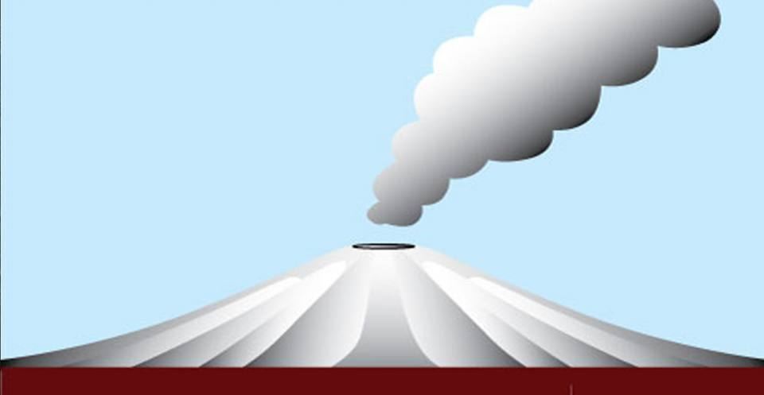
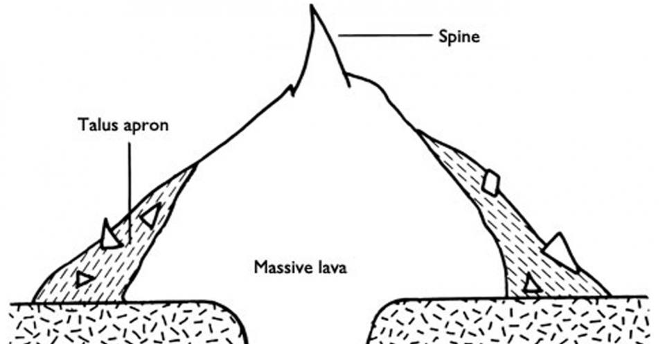

Types of volcano
Shield volcanoes
Where a volcano produces low viscosity, runny lava, it spreads far from the source and forms a volcano with gentle slopes: a shield volcano.
Most shield volcanoes are formed from fluid, basaltic lava flows. Mauna Kea and Mauna Loa are shield volcanoes.
They are the world’s largest active volcanoes, rising over 9 km above the sea floor around the island of Hawai’i.

Stratvolcano
Stratovolcanoes have relatively steep sides and are more cone-shaped than shield volcanoes.
They are formed from viscous, sticky lava that does not flow easily. The lava therefore builds
up around the vent forming a volcano with steep sides. Stratovolcanoes are more likely to produce
explosive eruptions due to gas building up in the viscous magma.
Andesite (named after the Andes Mountains), is perhaps the most common rock type of stratovolcanoes,
but stratovolcanoes also erupt a wide range of different rocks in different tectonic settings.
Lava dome
The Soufrière Hills volcano, on the Caribbean island of Montserrat, is well known for its lava dome complex
at the summit of the volcano, which has gone through phases of growth and collapse. As viscous lava is not
very fluid, it cannot flow away from the vent easily when it is extruded. Instead it piles up on top of the
vent forming a large, dome-shaped mass of material.

Caldera
Magma
is stored beneath a volcano in a magma chamber. When a very large, explosive eruption occurs that empties
the magma chamber, the roof of the magma chamber can collapse to form a depression or bowl with very steep walls
on the surface. These are calderas and can be tens of miles across.
Calderas can also be formed during an eruption that removes the summit of a single stratovolcano.
Caldera-forming eruptions can remove massive portions of a single stratovolcano. The top can literally
be blown off!
Lava flows and lava domes
Lava flows are flows of magma extruded onto the surface of a volcano. In general, it is rare for lava to cause
the direct loss of life, because it usually flows slowly, allowing sufficient time for people to be evacuated.
It does, however, destroy everything in its path by a combination of burial, crushing and heat.
Such eruptions are also associated with emission of volcanic gases and aerosols.